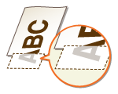
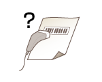

0KXF-03R
La suciedad dentro del equipo puede afectar a los resultados de impresión. Intente primero limpiar el equipo. Limpieza del equipo


Este síntoma se produce si no se ha establecido ningún margen en el controlador de impresora. El rango que puede imprimirse en este equipo es el rango dentro de un margen de 0,20 in (5 mm) alrededor del borde del papel o un margen de 0,39 in (10 mm) alrededor del borde de los sobres. Asegúrese de dejar márgenes alrededor del documento que desea imprimir.
Pestaña [Acabado]  [Configuración avanzada] [Expandir la región de impresión e imprimir] [Desactivado]
[Configuración avanzada] [Expandir la región de impresión e imprimir] [Desactivado]
En el controlador de impresora, cambie la configuración de [Ajuste de impresión especial A]. El efecto de mejora es el más débil para el [Modo 1] y el más fuerte para el [Modo 4]. Pruebe el ajuste comenzando con el [Modo 1].
Pestaña [Acabado] [Configuración avanzada] [Ajuste de impresión especial A] Seleccione un modo

Si selecciona [Modo 2] o [Modo 4], la calidad de la impresión podría ser inferior con algunos tipos de papel (especialmente con el papel fino) y en algunos entornos de impresión (especialmente en entornos con mucha humedad). En ese caso, seleccione [Modo 1] o [Modo 3].

Si selecciona un efecto de mejora más fuerte, la densidad general de la impresión será más ligera. Es posible también que los bordes salgan menos definidos y los detalles menos precisos.
En el controlador de impresora cambie la configuración de [Ajuste de impresión especial B]. El efecto corrector es el más débil para el [Modo 1] y el más fuerte para el [Modo 3]. Pruebe el ajuste comenzando con el [Modo 1].
Pestaña [Acabado] [Configuración avanzada] [Ajuste de impresión especial B] Seleccione un modo
Si selecciona un efecto de mejora más intenso, la velocidad de impresión será más lenta.
En la Ventana Estado de la impresora, active [Reducir manchas de tóner en torno al texto].
Apertura de la Ventana Estado de la impresora
Apertura de la Ventana Estado de la impresora
[Opciones] [Opciones de dispositivos] [Opciones de impresión asistida] Marque la casilla de verificación [Reducir manchas de tóner en torno al texto]
Si marca esta casilla de verificación, la calidad de la impresión podría ser inferior con algunos tipos de papel (especialmente con el papel fino) y en algunos entornos de impresión (especialmente en entornos con mucha humedad). En ese caso, desmarque la casilla de verificación.
Compruebe el tipo de papel que puede utilizarse y sustitúyalo por el papel adecuado.
Papel
Papel
Puede que los materiales del interior del cartucho de tóner se hayan deteriorado. Sustituya el cartucho de tóner.
Cómo sustituir los cartuchos de tóner
Cómo sustituir los cartuchos de tóner

Saque el cartucho de tóner, agítelo 5 o 6 veces para distribuir uniformemente el tóner dentro del cartucho y vuelva a cargarlo en el equipo.
Utilizar el tóner al completo
Utilizar el tóner al completo
Compruebe el tipo de papel que puede utilizarse y sustitúyalo por el papel adecuado.
Papel
Papel
Especifique de nuevo el tipo de papel según el tipo de papel que esté utilizando.
Operaciones básicas de impresión
Operaciones básicas de impresión

Este síntoma se produce si no se ha establecido ningún margen en el controlador de impresora. El rango que puede imprimirse en este equipo es el rango dentro de un margen de 0,20 in (5 mm) alrededor del borde del papel o un margen de 0,39 in (10 mm) alrededor del borde de los sobres. Asegúrese de dejar márgenes alrededor del documento que desea imprimir.
Pestaña [Acabado] [Configuración avanzada] [Expandir la región de impresión e imprimir] [Desactivado]

Saque el cartucho de tóner, agítelo 5 o 6 veces para distribuir uniformemente el tóner dentro del cartucho y vuelva a cargarlo en el equipo.
Utilizar el tóner al completo
Utilizar el tóner al completo
Puede que los materiales del interior del cartucho de tóner se hayan deteriorado. Sustituya el cartucho de tóner.
Cómo sustituir los cartuchos de tóner
Cómo sustituir los cartuchos de tóner
En el controlador de impresora cambie la configuración de [Ajuste de impresión especial B]. El efecto corrector es el más débil para el [Modo 1] y el más fuerte para el [Modo 3]. Pruebe el ajuste comenzando con el [Modo 1].
Pestaña [Acabado] [Configuración avanzada] [Ajuste de impresión especial B] Seleccione un modo
Si selecciona un efecto de mejora más intenso, la velocidad de impresión será más lenta.
Sustitúyalo por el papel adecuado.
Papel
Papel
Compruebe el tipo de papel que puede utilizarse y sustitúyalo por el papel adecuado.
Papel
Papel
Puede que los materiales del interior del cartucho de tóner se hayan deteriorado. Sustituya el cartucho de tóner.
Cómo sustituir los cartuchos de tóner
Cómo sustituir los cartuchos de tóner
En el controlador de impresora, establezca [Modo de impresión especial] en [Configuración especial 2].
Pestaña [Acabado] [Configuración avanzada] [Modo de impresión especial] [Configuración especial 2]
En comparación con la opción [Desactivado], la opción [Configuración especial 2] selecciona una densidad de impresión menor.


Compruebe que el tamaño del papel coincide con el tamaño de los datos de impresión.

Traslade el equipo a un lugar donde no esté expuesto a la luz solar directa.
Reubicación del equipo
Reubicación del equipo

Amplíe el código de barras.
En el controlador de impresora, establezca [Modo de impresión especial] en [Configuración especial 1].
Pestaña [Acabado] [Configuración avanzada] [Modo de impresión especial] [Configuración especial 1]
Si especifica [Configuración especial 1], las impresiones pueden salir con menos intensidad.